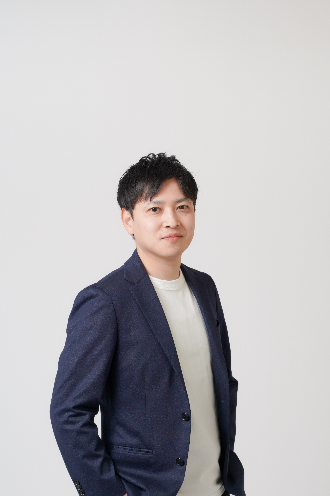

「転職準備」は、キャリアプラン設計が9割。
あなた専属のメンターが「キャリア設計」を。
専任の担当が「求人紹介」を。
私たちは「役割分担」で、あなたの転職を成功に導きます。
キャリア相談もそこそこに、大量の求人票が送られてくる…
「今すぐ応募しましょう」と、なぜか急かされる…
自分の「強み」が曖昧なまま、「受かりそうな会社」を勧められる…
書類選考が通らない理由を、具体的に教えてもらえない…
その違和感の原因は、
「キャリア相談」と「求人紹介」を
同じ担当者が行っていることにあります。
彼らのゴールは「企業への入社成功」であり、
ノルマのために「今ある求人」を優先しがちです。
キャリア相談・求人紹介・選考対策を一人で実施
→ 企業の「求人ありき」の提案になりがち…
「本当にやりたいこと」が見つかるまで、メンターが徹底的に自己分析をサポート。エージェントの都合を一切排除し、ゼロベースでキャリアを棚卸しします。
元人事の視点で、「通過する」履歴書・職務経歴書をゼロから設計。あなたの「強み」を採用担当者の言葉に翻訳する作業を、メンターが一緒に伴走します。
メンターが厳しい模擬面接と丁寧なフィードバックで、「あなたの魅力」が伝わるように徹底して言語化をサポート。もう面接で頭が真っ白になることはありません。
キャリアの軸が固まったら、いよいよ会社探し。あなたのメンターが同席した上で、「求人紹介の専門担当」があなたのキャリア設計に合った求人のみをご提案。設計と実行が分断されません。
以前一緒に動いてくれたエージェントの担当からは「書類が受からないし、これ以上紹介できない」と一蹴。メンターと壁打ちをしながら自身のキャリアを棚卸しし、転職活動を一歩ずつ進めました。書類が通るようになり、内定を獲得できました。
実家の介護の問題があり、以前働いていた都市部とは離れたエリアで就活をしました。金額や目線はもちろんやりたい仕事の内容での求人が全くない状態でした。私の性格を理解いただいたメンターが、求人担当に依頼をしてくれ、ぴったりの求人が見つかりました。
『転職すべきか』から悩んでいました。メンターは求人紹介ノルマがないので、『現職に残る』選択肢も真剣に考えてくれ、本当に信頼できました。他社のエージェントの担当は「コーポレートは諦めて、営業職にチャレンジしましょう」と言われましたが、メンターと一緒に納得のいく転職ができました。
得意分野：コンサルティングファーム、M&A会社、ベンチャー企業など。業界に関する深い理解、実務レベルでの業務イメージのすり合わせが強み。

得意分野：自己分析、履歴書や職務経歴書添削、350万〜600万レンジの転職支援、福岡・熊本エリアでの就職、年収アップ交渉が強み。
得意分野：派遣社員から正社員への転職、第二新卒、未経験キャリア、産休育休前後のキャリアアドバイスが強み。
転職の悩みや希望業界など、簡単な質問に答えるだけ。まずはLINEを友だち追加！
あなたの状況と相性の良いメンターのプロフィールがLINEに届きます。
まずはメンターと「キャリア設計」の初回面談。「この人だ！」と思ったらサポートを正式に依頼し、本格支援開始。
キャリアプランが固まったら、メンター同席のもと、求人紹介担当から求人紹介を受けることが出来ます。
「キャリア設計」と「求人探し」の担当者を分離する、
新しい転職サポートを体験しませんか？